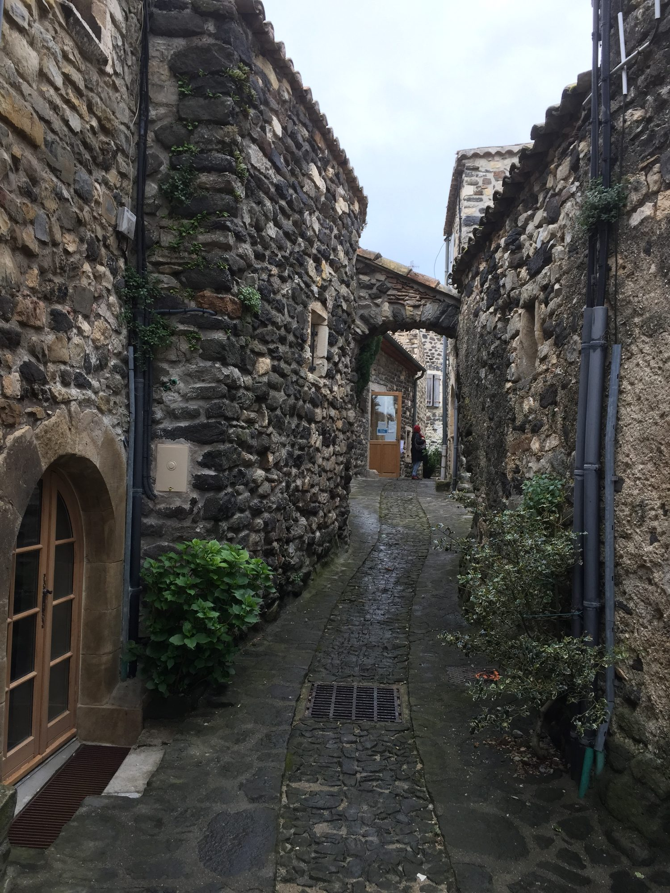

À environ 30 minutes des Cabritas, Rochemaure et Saint-Vincent-de-Barrès forment deux étapes voisines au pied des anciens volcans du Coiron. La première est réputée pour son village médiéval et sa spectaculaire passerelle himalayenne au-dessus du Rhône, la seconde pour son charme discret de village de caractère.
La passerelle himalayenne, un pont suspendu réinventé
Construite en 1858 selon la technique des ponts suspendus de Marc Seguin, l'ancienne passerelle de Rochemaure a longtemps servi de passage entre la Drôme et l'Ardèche, avant sa fermeture définitive en 1982. Classée monument historique en 1985, elle a été sauvée de la destruction puis transformée en passerelle himalayenne, inaugurée en 2013 : ses piles d'origine ont été restaurées et son tablier remplacé par une structure métallique suspendue, longue d'environ 300 mètres. Aujourd'hui empruntée par les piétons et les cyclistes de la ViaRhôna, elle attire chaque année plus de 100 000 visiteurs, séduits par la vue sur le Rhône, les monts du Coiron, l'ancien volcan du Chenavari et le château médiéval qui domine la ville.
Rochemaure, village médiéval au pied des volcans
Le village de Rochemaure s'organise autour des ruines de son château, avec ses ruelles de pierre et son atmosphère préservée. Le site offre une belle occasion de combiner patrimoine bâti et paysage volcanique, typique du plateau du Coiron qui domine la région.
Saint-Vincent-de-Barrès, joyau discret du Coiron
À quelques minutes de là, Saint-Vincent-de-Barrès complète agréablement la sortie : un village de caractère moins connu, aux ruelles tranquilles et à l'architecture typique du Coiron, idéal pour prolonger la balade sans se presser.

Infos pratiques depuis Les Cabritas
- Distance depuis Flaviac : environ 25 km
- Meilleure période : toute l'année, printemps et automne pour la marche
- Idéal pour : patrimoine, sensations (passerelle suspendue), photographie
Envie de découvrir Rochemaure et Saint-Vincent-de-Barrès depuis votre gîte en Ardèche ?
Les Cabritas vous accueillent à Flaviac, au cœur de l'Ardèche, pour un séjour confortable avec piscine privée, à deux pas des plus beaux sites de la région.
Vérifier les disponibilités